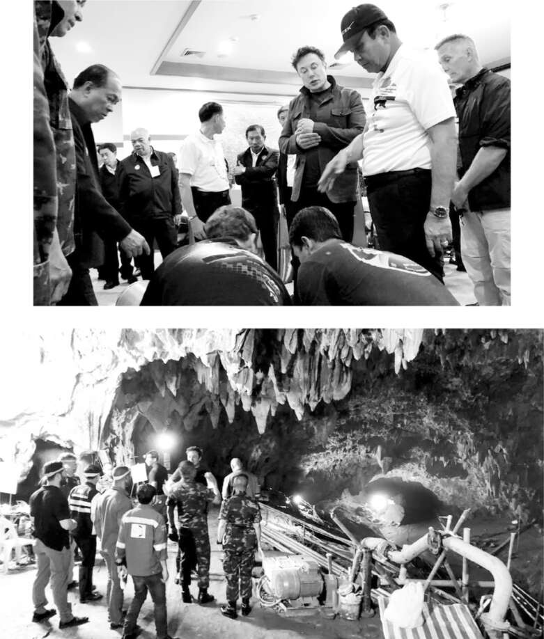

Kẻ ấu dâm
Trong khi Kimbal Musk đang hưởng tuần trăng mật vào đầu tháng 7 năm 2018, anh ấy nhận được email từ Antonio Gracias, bạn lâu năm và thành viên hội đồng quản trị của Elon. "Xin lỗi anh bạn, tôi biết anh muốn ở bên vợ, nhưng anh phải quay lại ngay lập tức," Gracias viết. "Elon đang bị suy sụp."
Thành công trong việc đẩy mạnh sản xuất đáng lẽ ra phải khiến Musk hài lòng. Tesla đã đạt mục tiêu sản xuất 5.000 xe Model 3 mỗi tuần và đang hướng tới một quý có lãi. SpaceX đã hoàn thành 56 lần phóng thành công, chỉ một lần thất bại, và giờ đây thường xuyên hạ cánh thành công các tên lửa đẩy để tái sử dụng. SpaceX đang đưa nhiều trọng tải lên quỹ đạo hơn bất kỳ công ty hay quốc gia nào khác, bao gồm cả Trung Quốc và Mỹ. Nếu Musk là người biết dừng lại và tận hưởng thành công, ông hẳn đã nhận ra mình vừa đưa thế giới bước vào kỷ nguyên của xe điện, du hành vũ trụ thương mại và tên lửa tái sử dụng. Mỗi điều này đều rất quan trọng.
Nhưng với Musk, những khoảng thời gian thuận lợi lại khiến ông bất an. Ông bắt đầu nổi nóng về những chuyện lẽ ra chỉ là vấn đề nhỏ, chẳng hạn như việc một nhân viên tại nhà máy pin Nevada tiết lộ về lượng vật liệu phế thải bị loại bỏ. Đó là khởi đầu của một cơn khủng hoảng tâm lý, kéo dài từ tháng 7 đến tháng 10 năm 2018, khi Musk bị giằng xé bởi những thôi thúc bốc đồng và khao khát sóng gió. Kimbal nói: “Đó là một ví dụ khác cho thấy ông ấy luôn là tâm điểm của mọi rắc rối”.
Những rắc rối mới bắt đầu ngay sau khi Tesla đạt mốc 5.000 xe mỗi tuần. Musk đang lướt Twitter và tình cờ thấy một tin nhắn từ một người dùng vô danh với rất ít người theo dõi: “Chào ngài, nếu có thể, ngài có thể hỗ trợ bằng bất kỳ cách nào để đưa 12 cậu bé Thái Lan và huấn luyện viên của họ ra khỏi hang không?”. Người này đang đề cập đến một đội bóng đá thiếu niên Thái Lan bị mắc kẹt do lũ lụt khi đang khám phá một hang động.
Musk đã tweet: “Tôi nghĩ rằng chính phủ Thái Lan đang kiểm soát tình hình, nhưng tôi sẵn lòng giúp đỡ nếu có cách nào đó”.
Sau đó, bản năng hành động của ông trỗi dậy. Làm việc với các kỹ sư tại SpaceX và The Boring Company, ông bắt đầu chế tạo một chiếc tàu mini hình vỏ kén mà ông nghĩ rằng có thể được đưa vào hang động ngập nước để giải cứu các cậu bé. Sam Teller đã nhờ một người bạn cho họ mượn bể bơi của trường để thử nghiệm vào cuối tuần đó, và Musk bắt đầu đăng ảnh thiết bị lên Twitter.
Câu chuyện trở thành tin tức toàn cầu, một số người chỉ trích Musk là đang đánh bóng tên tuổi. Sáng sớm Chủ nhật, ngày 8 tháng 7, ông đã liên hệ với một lãnh đạo đội cứu hộ ở Thái Lan để đảm bảo rằng thứ ông đang chế tạo có thể hữu ích. Ông viết trong email: “Tôi có một trong những đội ngũ kỹ sư giỏi nhất thế giới, những người thường thiết kế tàu vũ trụ và bộ du hành vũ trụ, đang làm việc 24/24 cho việc này. Nếu nó không cần thiết hoặc không giúp ích được gì, tôi rất muốn biết”. Trưởng nhóm cứu hộ trả lời: “Việc tiếp tục hoàn toàn xứng đáng”.
Cuối ngày hôm đó, Musk và bảy kỹ sư cùng với chiếc tàu mini và hàng đống thiết bị đã chen chúc trên máy bay riêng của ông. Họ đến miền bắc Thái Lan lúc 11:30 tối và được thủ tướng chào đón, người đã đội mũ SpaceX và đưa họ xuyên rừng đến hang động. Ngay sau 2 giờ sáng, Musk cùng các vệ sĩ và kỹ sư, đeo đèn pha, lội qua vùng nước ngập đến ngang eo vào hang động tối tăm.
Sau khi chiếc tàu mini được chuyển đến địa điểm hang động, Musk đã bay đến Thượng Hải, nơi ông ký thỏa thuận mở thêm một Gigafactory của Tesla. Vào thời điểm đó, một chiến dịch giải cứu bằng thợ lặn đang được tiến hành, và chiếc tàu ngầm của Musk không cần thiết nữa. Các cậu bé và huấn luyện viên của họ đã an toàn. Câu chuyện lẽ ra đã kết thúc ở đó, nếu không có một nhà thám hiểm hang động 63 tuổi người Anh tên là Vernon Unsworth, người đã tư vấn cho đội cứu hộ Thái Lan tại hiện trường, đã trả lời phỏng vấn CNN, cho rằng nỗ lực của Musk “chỉ là một chiêu trò PR” mà “hoàn toàn không có cơ hội thành công”. Unsworth nói, kèm theo một tiếng cười khúc khích, rằng “ông ta có thể nhét cái tàu ngầm của mình vào chỗ nào đó đau đi”.
Những lời chỉ trích nhắm vào Musk xuất hiện liên tục, và đôi khi khiến ông nổi đóa. Ông đáp trả bằng một loạt bài đăng trên Twitter công kích Unsworth, kết thúc một bài bằng câu "Xin lỗi đồ ấu dâm, tự anh chuốc lấy thôi." Khi một người dùng khác hỏi Musk liệu ông có đang gọi Unsworth là kẻ ấu dâm không, ông trả lời, "Cá với anh một đô la có chữ ký của tôi rằng điều đó là sự thật."
Cổ phiếu Tesla giảm 3,5%.
Musk không có bằng chứng cho những cáo buộc của mình. Teller, Gracias và cố vấn pháp lý của Tesla đã cố gắng thuyết phục ông rút lại lời nói, xin lỗi và tạm thời ngừng sử dụng Twitter. Sau khi Teller gửi email cho ông với một lời xin lỗi được soạn sẵn, Musk đã phản hồi, "Tôi không hài lòng với cách tiếp cận được đề xuất.... Chúng ta cần phải ngừng hoảng sợ." Nhưng vài giờ sau, Teller và những người khác đã thuyết phục ông đăng một lời rút lại trên Twitter. "Những lời của tôi được nói ra trong lúc tức giận sau khi ông Unsworth nói nhiều điều không đúng sự thật & gợi ý tôi thực hiện một hành vi tình dục với chiếc tàu ngầm mini, thứ được chế tạo như một hành động tử tế & theo đúng thông số kỹ thuật từ trưởng nhóm lặn…. Tuy nhiên, hành động của ông ấy đối với tôi không biện minh cho hành động của tôi đối với ông ấy, và vì điều đó, tôi xin lỗi ông Unsworth."
Một lần nữa, nếu Musk bằng lòng dừng lại ở đó, mọi chuyện có thể đã kết thúc. Nhưng vào tháng 8, ông đã trả lời một người dùng Twitter chỉ trách ông về việc gọi Unsworth là kẻ ấu dâm bằng cách nói, "Bạn không thấy lạ là ông ta chưa kiện tôi sao? Ông ta đã được đề nghị hỗ trợ pháp lý miễn phí." Ngay cả một trong những người hâm mộ lớn nhất của ông trên Twitter, Johnna Crider, cũng khuyên ông, "Này Elon, đừng dính vào mấy chuyện thị phi này nữa, đó là điều họ muốn."
Đến lúc đó, Unsworth đã thuê một luật sư, Lin Wood (người sau này trở nên tai tiếng với tư cách là một người theo thuyết âm mưu cố gắng lật ngược cuộc bầu cử năm 2020). Ông ta đã gửi một lá thư cảnh báo rằng ông ta sẽ đệ đơn kiện Musk vì tội phỉ báng thay mặt Unsworth. Khi Ryan Mac của BuzzFeed yêu cầu Musk bình luận, Musk đã mở đầu email trả lời của mình bằng cách nói rằng đó là "ngoài hồ sơ". Nhưng BuzzFeed chưa bao giờ đồng ý với điều khoản đó và vì vậy đã in hàng loạt những lời lẽ tiếp theo. "Tôi đề nghị anh gọi cho những người anh biết ở Thái Lan, tìm hiểu chuyện gì đang thực sự xảy ra và ngừng bênh vực những kẻ hiếp dâm trẻ em, đồ khốn nạn," Musk bắt đầu. "Ông ta là một ông già da trắng độc thân đến từ Anh, đã đi du lịch hoặc sống ở Thái Lan từ 30 đến 40 năm, chủ yếu là bãi biển Pattaya, cho đến khi chuyển đến Chiang Rai để cưới một cô dâu trẻ khoảng 12 tuổi vào thời điểm đó. Chỉ có một lý do khiến mọi người đến bãi biển Pattaya. Đó không phải là nơi bạn đến để khám phá hang động, mà là nơi bạn đến vì một mục đích khác. Chiang Rai nổi tiếng với nạn buôn bán tình dục trẻ em." Lời nói về vợ của Unsworth là không đúng sự thật, và cáo buộc của Musk không giúp củng cố tuyên bố của ông rằng cụm từ "đồ ấu dâm" chỉ là một lời lăng mạ ngẫu nhiên chứ không phải là một lời buộc tội cụ thể.I
Các nhà đầu tư lớn của Tesla bày tỏ lo ngại. "Ông ấy gần như mất kiểm soát," Joe Fath của T. Rowe Price, người đã gọi điện sau những dòng tweet về ấu dâm, cho biết. "Những chuyện này phải dừng lại," ông nói với Musk, so sánh hành vi của ông với Lindsay Lohan, một nữ diễn viên đang mất kiểm soát vào thời điểm đó. "Ông đang gây thiệt hại nghiêm trọng cho thương hiệu." Cuộc trò chuyện của họ kéo dài bốn mươi lăm phút, và Musk dường như đã lắng nghe. Nhưng hành vi phá hoại của ông vẫn tiếp diễn.
Kimbal tin rằng sự hỗn loạn của Musk một phần bắt nguồn từ nỗi đau dai dẳng của anh, sau gần một năm, vì chia tay với Amber Heard. "Tôi chắc chắn rằng sự sa sút năm 2018 không chỉ liên quan đến Tesla," Kimbal nói. "Đó là kết quả của việc anh ấy đang vô cùng đau buồn vì Amber."
Bạn bè của Musk bắt đầu gọi những cơn khủng hoảng của anh là "mất kiểm soát". Thuật ngữ này dùng để chỉ một vật thể, chẳng hạn như một viên đạn, trái ngược với tên lửa dẫn đường, không có cơ chế phản hồi để định hướng. Kimbal nói: "Bất cứ khi nào bạn bè của chúng tôi mất kiểm soát, nghĩa là họ không nhận được phản hồi liên tục và dường như không quan tâm đến kết quả, chúng tôi sẽ tự mình cho họ biết". Vì vậy, sau khi sự việc tweet tai tiếng leo thang, Kimbal đã nói với anh trai mình: "Được rồi, cảnh báo mất kiểm soát đấy". Đó là một cụm từ anh ấy sẽ sử dụng bốn năm sau đó khi Musk đang giải quyết việc mua lại Twitter.
Vào cuối tháng 7, Musk đã gặp gỡ các nhà lãnh đạo của quỹ đầu tư chính phủ Ả Rập Xê Út tại phòng họp Jupiter của nhà máy Fremont. Họ cho biết đã âm thầm tích lũy gần 5% cổ phần của Tesla. Giống như trong các cuộc họp trước, Musk và Yasir Al-Rumayyan, người đứng đầu quỹ, đã thảo luận về khả năng tư nhân hóa Tesla. Ý tưởng này hấp dẫn Musk. Anh ghét việc giá trị công ty bị định đoạt bởi những nhà đầu cơ và bán khống, đồng thời khó chịu với các quy định đi kèm với việc niêm yết trên sàn giao dịch chứng khoán. Al-Rumayyan để Musk tự quyết định, nói rằng ông "muốn nghe thêm" và sẽ ủng hộ một kế hoạch "hợp lý" để tư nhân hóa công ty.
Hai ngày sau, cổ phiếu Tesla tăng vọt 16% khi công bố kết quả kinh doanh quý II khả quan, bao gồm việc đạt sản lượng 5.000 xe mỗi tuần. Musk lo lắng rằng nếu cổ phiếu tiếp tục tăng, việc tư nhân hóa công ty sẽ trở nên quá tốn kém. Vì vậy, đêm đó, anh đã gửi một bản ghi nhớ cho hội đồng quản trị: anh muốn tư nhân hóa công ty càng sớm càng tốt và đề nghị thực hiện với giá 420 đô la một cổ phiếu. Ban đầu, anh tính toán mức giá là 419 đô la, nhưng anh thích con số 420 vì nó là tiếng lóng chỉ việc hút cần sa. "Dường như 420 mang lại may mắn hơn 419", anh nói. "Nhưng tôi không phê cần sa, nói rõ nhé. Cần sa không tốt cho năng suất. Có lý do cho từ 'phê' đấy." Sau đó, anh thừa nhận với Ủy ban Chứng khoán và Giao dịch rằng việc chọn giá như một trò đùa về cần sa là một hành động không khôn ngoan.
Hội đồng quản trị không đưa ra bất kỳ thông báo công khai nào khi xem xét đề xuất của Musk. Nhưng vào sáng ngày 7 tháng 8, khi đang trên đường đến sân bay tư nhân ở Los Angeles, anh đã đăng một dòng tweet định mệnh. "Đang cân nhắc tư nhân hóa Tesla ở mức 420 đô la. Đã có kinh phí."
Cổ phiếu tăng vọt 7% trước khi các quan chức sàn giao dịch tạm dừng giao dịch. Một quy tắc đối với các công ty đại chúng là ban điều hành phải cảnh báo sàn giao dịch mười phút trước bất kỳ thông báo nào có thể gây ra biến động thị trường. Musk đã không chú ý đến các quy tắc. SEC ngay lập tức mở một cuộc điều tra.
Hội đồng quản trị và ban quản lý cấp cao của Tesla đã bị bất ngờ. Khi người đứng đầu bộ phận quan hệ nhà đầu tư của công ty nhìn thấy tweet của Musk, anh ấy đã nhắn tin cho Teller, hỏi: "Tin này có thật không?". Gracias đã gọi cho Musk để chính thức bày tỏ sự lo ngại của hội đồng quản trị và yêu cầu anh ngừng đăng tweet cho đến khi vấn đề được thảo luận.
Musk không hề nao núng trước sự xôn xao mà dòng tweet của mình gây ra. Anh bay đến Gigafactory Nevada, nơi anh nói đùa với các quản lý về việc "420" là một cụm từ liên quan đến cần sa, và làm việc suốt phần còn lại của ngày trên dây chuyền lắp ráp pin. Vào buổi tối, anh bay đến nhà máy Fremont, nơi anh tổ chức các cuộc họp đến khuya.
Lúc này, phía Ả Rập Xê Út bắt đầu bày tỏ sự không hài lòng khi cuộc thảo luận về việc tư nhân hóa Tesla bị phóng đại thành dòng tweet “đã đảm bảo nguồn vốn”. Al-Rumayyan, người đứng đầu quỹ, nói với Bloomberg News rằng họ “đang đàm phán” với Musk. Khi Musk thấy bài báo, anh nhắn tin cho Al-Rumayyan: “Đây là một tuyên bố quá yếu ớt và không phản ánh đúng cuộc trò chuyện của chúng ta. Ông đã nói rằng ông chắc chắn quan tâm đến việc tư nhân hóa Tesla và đã muốn làm điều đó từ năm 2016. Ông đang đẩy tôi vào thế khó”. Anh nói thêm rằng nếu Al-Rumayyan không đưa ra một tuyên bố công khai mạnh mẽ hơn, “Chúng ta sẽ không bao giờ nói chuyện với nhau nữa. Không bao giờ”.
“Một bàn tay vỗ không kêu”, Al-Rumayyan trả lời. “Chúng tôi vẫn chưa nhận được bất kỳ thông tin gì… Chúng tôi không thể chấp thuận điều gì đó mà chúng tôi không có đủ thông tin”.
Musk dọa sẽ cắt đứt thảo luận với phía Ả Rập Xê Út. “Tôi rất tiếc, nhưng chúng ta không thể hợp tác”, anh nói với Al-Rumayyan.
Đối mặt với sự phản đối từ các nhà đầu tư tổ chức, vào ngày 23 tháng 8, Musk đã rút lại đề xuất tư nhân hóa công ty. “Dựa trên những phản hồi tôi nhận được, rõ ràng là hầu hết các cổ đông hiện tại của Tesla tin rằng chúng tôi nên duy trì là một công ty đại chúng”, anh cho biết trong một tuyên bố.
Hậu quả thật nặng nề. “Đây là hành vi mạo hiểm điển hình của chứng rối loạn lưỡng cực”, Jim Cramer của CNBC nói trên sóng truyền hình. “Tôi đang nói về hành vi rõ ràng đang được xem xét bởi nhiều bác sĩ tâm thần, họ nói rằng đây là hành vi mạo hiểm điển hình, đây không phải là điều một CEO nên làm”. Trên tờ New York Times, nhà báo James Stewart viết rằng dòng tweet “tư nhân hóa” “quá bốc đồng, có khả năng không chính xác, dùng từ kém và thiếu suy nghĩ, và với những hậu quả tiềm tàng nghiêm trọng cho chính anh ta, Tesla và các cổ đông, đến nỗi hội đồng quản trị giờ đây phải đặt ra một câu hỏi nhạy cảm nhưng quan trọng: Tâm trạng của ông Musk lúc viết dòng tweet đó là gì?”
Để tránh một vụ kiện liên bang vì tội gây hiểu lầm cho các nhà đầu tư, các luật sư của Musk đã làm việc với SEC để dàn xếp các cáo buộc. Anh ta sẽ vẫn là CEO của Tesla, từ chức chủ tịch, nộp phạt 40 triệu đô la và bổ nhiệm hai giám đốc độc lập vào hội đồng quản trị. Một điều khoản khác chắc chắn sẽ gây khó chịu: Musk sẽ không được phép đưa ra bình luận công khai hoặc tweet về bất kỳ thông tin quan trọng nào mà không được sự chấp thuận từ người giám sát của công ty. Gracias và CFO của Tesla, Deepak Ahuja, đã rất nỗ lực để anh ta chấp nhận các điều khoản này và bỏ lại những tranh cãi - và có lẽ cả những tháng ngày khủng hoảng - phía sau. Nhưng Musk đã khiến họ ngạc nhiên khi đột ngột từ chối thỏa thuận được đề xuất. Vào đêm ngày 26 tháng 9, SEC đã đệ đơn kiện, tìm cách cấm anh ta điều hành Tesla hoặc bất kỳ công ty đại chúng nào khác suốt đời.
Ngồi tại trụ sở Fremont của Tesla vào ngày hôm sau, Musk nắm chặt một chai nước và nhìn chằm chằm vào màn hình lớn đang chiếu CNBC. “SEC cáo buộc Người sáng lập & CEO của Tesla, Elon Musk, tội gian lận”, dòng chữ chạy trên màn hình. Một biểu đồ lớn hiện lên trên màn hình, thông báo: “Cổ phiếu Tesla sụt giảm”. Nó đã giảm 17%. Cả ngày hôm đó, các luật sư của Musk, cùng với Antonio, Kimbal và Deepak, đã thúc ép anh ta thay đổi quyết định và đạt được thỏa thuận. Miễn cưỡng, anh ta đồng ý chọn con đường thực tế và chấp nhận thỏa thuận với SEC. Cổ phiếu đã tăng trở lại.
Musk tin rằng anh ta không làm gì sai. Anh ta nói rằng anh ta buộc phải thỏa thuận, vì nếu không Tesla sẽ phá sản. “Giống như có một khẩu súng chĩa vào đầu con mình vậy. Tôi buộc phải nhượng bộ SEC một cách bất hợp pháp. Lũ khốn đó”. Anh ta bắt đầu nói đùa về ý nghĩa của SEC, cho rằng từ ở giữa là “Elon’s”.
Ông phần nào được minh oan vào năm 2023 khi thắng kiện một nhóm cổ đông cáo buộc họ bị thua lỗ dựa trên dòng tweet của ông. Bồi thẩm đoàn nhất trí quyết định rằng ông không phải chịu trách nhiệm cho những tổn thất của họ. Luật sư Alex Spiro của ông đã lập luận trước bồi thẩm đoàn rằng, "Elon Musk chỉ là một đứa trẻ bốc đồng với thói quen Twitter tệ hại." Đó là một chiến lược bào chữa hiệu quả, lại trùng hợp là sự thật.
Chú thích:

Với Thủ tướng Thái Lan đang kiểm tra tàu ngầm mini; chuẩn bị vào hang cùng các cậu bé bị mắc kẹt